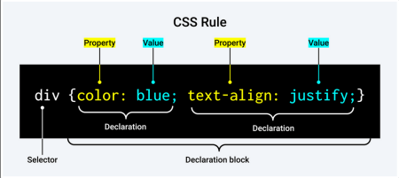
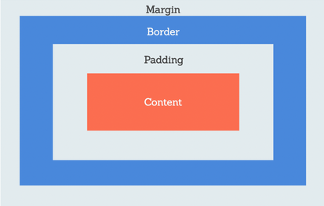
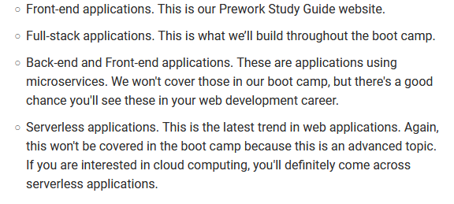
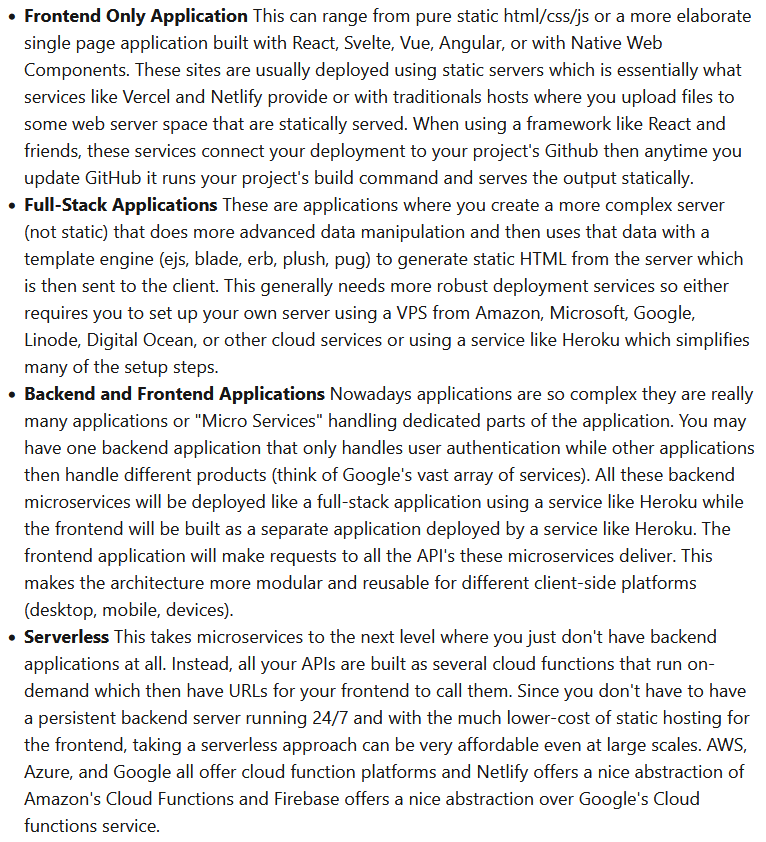
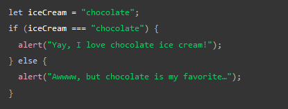
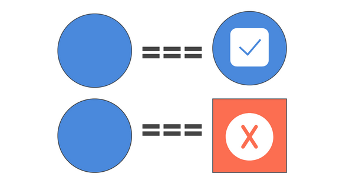

HTML
- The head element contains info about the webpage (Metadata)
- There should only be one "h1" per page
- The headers will get smaller as the tier goes up, and you can include multiple headers on each tier except "h1"
- The tag "ul" is unordered list, "li" is list item, and "ol" is ordered list (numbered etc?)
- The script tag does the same thing as link, but applies JavaScript to the page instead
CSS
- CSS is used to define how webpage content is presented to users
- Whereas HTML stricly handles structure and content, CSS defines colors, aesthetics, visual layout and organization
- There are three ways to style a page using CSS: inline CSS, internal CSS style sheet, and external CSS style sheet
Inline CSS
- When a developer wants to style an element directly in the HTML file, they use inline CSS.
- Inline styles let you change how one thing looks on a webpage by putting a special code right next to it. This is good for making fast and lasting changes, but it's not very flexible. For a lot of changes at once, it takes more work than using the other methods.
- An example of inline CSS is using the style attribute to change the color of a single h1 heading: < h1 style="color:red;">Prework Study Guide < /h1>
Internal CSS Style Sheet
- Internal style sheets can include CSS ules for the webpage in the head section of the HTML file, but the rules only apply to that page.
- You can configure CSS classes and ID's, whcih are used to identify elements, to style multiple elements in the page code. A single change will affect all tagged elements.
- This code when put in the head ensures that all "h1" elements will be red.
h1 {
color: red;
}
External CSS Style Sheet
- Inline CSS and internal style sheets are totally acceptable methods under certain conditions, but the most common way to style a webpage is by using an external CSS style sheet.
- This allows you to keep all your CSS rules in a separate file, making design changes easier
- When using External SS, we link the file using a < link > element placed in the HTML's head like so: < link rel="stylesheet" href="./assets/style.css" />
- Separation of concerns is a widely used term in web development and refers to separating code into different files based on use. It is one of the key design principles that we practice in the boot camp. Separation of concerns is based on the idea that each section of code should have its own responsibility.

- Selector: defines the element or attributes to which the rules, or declarations, will apply.
- Declarations: contain two important components, the CSS property we want to apply, and the value of the property.
- margin: indicates how much space we want around the outside of an element; 0 means no extra space around the element
- padding: often confused with margin, but not the same. Adds space around the content inside an element. When you increase padding, it actually makes the whole element bigger. Padding is located inside element, whereas margin is a transparent buffer outside the element.

- "*" selector: applies the rule to all of the elements visible on the page. * is a Wildcard symbol.
- You can apply rules to multiple selectors by separating them with a comma like so: header,
footer {
width: 100%;
height: 120px;
background-color: blue;
color: white;
}
- img Selectors with a display property that is assigned with the block value will assign each image to start on a new line.
- When we create an external CSS file, we need to link it to the HTML file. To do this, we will use the HTML < link > element.
- For this project, we would need to add this to the head section of the html file. < link rel="stylesheet" href="./assets/style.css" >
- the < link > element creates the connection to the external file, the ref attribute specifies the relationship between the current document and the linked resource, and the href attribute specifies the location (URL) of the external resource.
- Class attributes allow us to share a CSS rule to any element we choose by assigning the rule to a class attribute with a class selector. Then the class attribute can be assigned to the element in the HTML, enabling us to freely choose which elements will be assigned the CSS rule.

- The period preceding card designates this as a class selector. Any HTML element assigned to the class, card, will gain these property assignments from the CSS.
- The first declaration addresses the width of the element at 80% of the available width.
- The margin property assigns 40px to the top and bottom, and the auto value to the left and right.
- The border property assigns a border with a width of 5px that is solid and gray.
- The box-shadow CSS property adds shadow effects around an element's frame. You can set multiple effects separated by commas. A box shadow is described by X and Y offsets relative to the element, blur and spread radius, and color. In our example, the X offset is 5px and defines the width or extent of the shadow on the X axis (or to the right of the box); the Y offset is 10px and defines the extent on the Y axis (or just below the box). We haven’t defined the blur or spread radius here, but you’ll learn more about this in time. We’ve used an HTML hexadecimal code to define the color.
- We have declared all the property assignments for the class selector, .card, and made sure the class attribute, card, has also been assigned to the correct < section > elements in the markup
Git
- git status: checks what branch we are currently on
- git checkout -b branch-name: creates a new branch and switches to it
- git add -A: adds the changed files in our working dir to the staging area of Git
- git commit -m "description of commit": commits the changed files with a description; the "-m" flag associates a "message" with the commit
- git pull origin main: makes sure the current branch is up-to-date before opening a pull request
- git push origin (branch-name): pushes commit to source
*Deployment*
- When we make a website "live" on the internet and available for everyone to see, it’s called deployment.
- Every deployed website has a unique address, which is known as a Uniform Resource Locator, or URL. The URL appears in a browser's address bar when the website is displayed. URLs allow users to find and visit our website. For example, the URL for Google is google.com. When you type google.com into a browser's address bar, the Google search webpage appears.
- Every project that you create and store in GitHub should have a professional README file, which will describe the project to fellow developers.
- A polished GitHub profile is an important part of your public identity as a developer. Why? For one thing, it will most likely be the first place that potential employers look to evaluate your skills and professionalism. And it also allows you to connect with and showcase your work to other developers, which can lead to interesting collaborations.
- Use the following questions as a guide:
What was your motivation?
Why did you build this project? (Note: the answer is not "Because it was a homework assignment.")
What problem does it solve?
What did you learn?
What makes your project stand out?
- Your README might also describe some of the challenges you faced, as well as the features you plan to implement in the future. And if your project is deployed, make sure to include a link to the deployed application so people can see it in action!
- README files are written in Markdown, and are always named README.md (note that README is in all caps).
- Use the following Markdown template to create a professional README file:
# Your-Project-Title
## Description
Provide a short description explaining the what, why, and how of your project. Use the following questions as a guide:
- What was your motivation?
- Why did you build this project? (Note: the answer is not "Because it was a homework assignment.")
- What problem does it solve?
- What did you learn?
## Table of Contents (Optional)
If your README is long, add a table of contents to make it easy for users to find what they need.
- [Installation](#installation)
- [Usage](#usage)
- [Credits](#credits)
- [License](#license)
## Installation
What are the steps required to install your project? Provide a step-by-step description of how to get the development environment running.
## Usage
Provide instructions and examples for use. Include screenshots as needed.
To add a screenshot, create an `assets/images` folder in your repository and upload your screenshot to it. Then, using the relative filepath, add it to your README using the following syntax:
```md

```
## Credits
List your collaborators, if any, with links to their GitHub profiles.
If you used any third-party assets that require attribution, list the creators with links to their primary web presence in this section.
If you followed tutorials, include links to those here as well.
## License
The last section of a high-quality README file is the license. This lets other developers know what they can and cannot do with your project. If you need help choosing a license, refer to [https://choosealicense.com/](https://choosealicense.com/).
---
🏆 The previous sections are the bare minimum, and your project will ultimately determine the content of this document. You might also want to consider adding the following sections.
## Badges

Badges aren't necessary, per se, but they demonstrate street cred. Badges let other developers know that you know what you're doing. Check out the badges hosted by [shields.io](https://shields.io/). You may not understand what they all represent now, but you will in time.
## Features
If your project has a lot of features, list them here.
## How to Contribute
If you created an application or package and would like other developers to contribute it, you can include guidelines for how to do so. The [Contributor Covenant](https://www.contributor-covenant.org/) is an industry standard, but you can always write your own if you'd prefer.
## Tests
Go the extra mile and write tests for your application. Then provide examples on how to run them here.
- Previously, we pointed out that deploying a website gave our website a unique, public address on the web, or URL. A URL, or Uniform Resource Locator, is simply the web address of a resource on the web to make finding the resource easier—this fulfills a similar function as a street address.
- It is important to note that when we deploy, the files we worked with during development do not change. In fact, it is common for developers to keep working on their project locally even after they deploy for the first time, and to re-deploy when they want to publish those changes. This is part of what makes the internet so dynamic and constantly evolving: it is easy to make changes to websites even after they are deployed.

- Your browser is really the heart of the "client" experience. The browser allows an internet user to type in requests for different resources from the web and render them into a unified user experience.
- When you type a URL into the address bar of a browser and hit enter the browser does what is called an HTTP request (Hyper Text Transfer Protocol) which is a process by which computers send text-based information to each other. Literally, every image, site, video, and audio piece of content you experience starts as a stream of text going into your browser to then be rendered.
http://www.alexmercedcoder.com/cheese?type=gouda&taste=good
-
http:// This is the protocol being used to make a connection to the eventual web server. HTTP/HTTPS protocol makes a one-way connection to the server to send the request, when the server processes the request it then generates a response and will open a new connection to send it back. Think of this as two pen pals mailing each other letters back and forth. ws/wss protocol are web sockets where an open connection is made between two points and each side listens for events from the other. Imagine a volleyball game where the players on both sides are alert cause the ball can be volleyed over to their side at any moment. http/ws traffic is not encrypted by SSL and is by default directed to IP Port 80 on the destination server while https/wss traffic is secured by SSL and directed to port 443.
IP Ports are places where internet requests can be received by a computer, imagine them like the different piers in a seaport and the boats docking the piers being internet requests. Servers can listen to requests on port numbers up to 65535 (not that you'd ever want that many servers running on one computer).
-
www.alexmercedcoder.com this is the host made of the domain (alexmercedcoder.com) and the subdomain (www.). When the request is made your browser sends the request to your internet router who then sends it to your internet service provider. The ISP then consults DNS Servers(Domain Name Service) which are like giant phone books matching up the domain/subdomain with the IP address of the server that has the content.
Once the request arrives at the IP address the destination server is usually running web server software like Nginx or Apache which listens for http/ws requests on port 80 and https/wss traffic on 443 then directs it to other applications that are running at different ports on the machine (many hosting providers referred to this as "shared hosting").
-
/cheese This is called the endpoint or slug. Once the request finally reaches your application it will be able to determine how to respond based on the slug. The application usually either runs one of several controller functions to generate a response or if acting as a static file server treats the slug as a file path to find a particular file. "/cheese" on a static server would look for a folder called cheese and default to returning the index.html in that folder. If I wanted a different file I'd specify it, "/cheese/somePicture.jpg".
The response always comes with a status code. If the server found a controller function or static file associated with the slug it'll respond with a 200. If it cannot find a way to respond it will send a 404 not found response. If there is some error in completing the response you'll get a 500 level response and if your browser used a cached version of the request you'll get a 300 level response.
- ?type=gouda&taste=good This is a URL query. The server may expect these with certain slugs to get more information. For example, when you view a video on youtube, which video should be shown on the page comes from a URL query (watch a youtube video and look at the URL.). In this example, I've sent the server a type query with a value of gouda and a taste query with a value of good, which does nothing unless the server expected to receive these queries. The "?" signifies the beginning of the query and the "&" separates the different queries.
In Summary
How does a request work...
- User types a URL in the address bar of a browser
- request is sent to users router/modem
- request is routed to users ISP
- ISP sends a request to a DNS server
- DNS server directs requests to the host ip address
- The web server running on the host machine then directs it to the right port on that machine for that particular site or application
- the applications server then uses the slug/endpoint to determine how to respond (either with a static file or by a controller function)
- the response is sent to the browser
- If the browser receives an html it'll then make further requests for linked js, css, and image files.

- If running a static website with basic html/css/js files there are endless hosting solutions usually using Apache Servers running PHP based cPanel dashboards. Although If you want to use React/Vue/Svelte/Angular you are going to want a service with Continuous Deployment so you don't have to reupload all your content each time you deploy and that's where Netlify and Vercel fit in wonderfully.
- Continuous Deployment is the concept of creating an automated pipeline of your deployment process. Typically this takes the form of updating your code on GitHub which then triggers automation that ends in your project being deployed (Netlify and Vercel make this very easy). This type of pipeline is also used to integrate code from others into a project automating a pipeline of tests and this is referred to as Continuous Integration. (CI/CD)
Virtual Private Server (VPS)
- When expanding beyond the world of static hosting to build applications with frameworks like Laravel/PHP, Django/Python, Express/JS, Rails/Ruby, Spring/Java, Buffalo/Go, and many more you'll need more control over your deployment environment. This mainly involves getting a virtual private server, an imaginary computer of your very own with its own public IP address. This would then involve a process that looks like this.
- Provision a VPS from services like AWS, gCloud, Azure, Linode, Digital Ocean
- setup a firewall to only allow externals requests to port 80 & 443
- Install Apache or Nginx
- installing any database servers your app uses
- clone your application from github with git
- run your app and make sure to point it to the local database server
- run your application on a port (for example, port 3000)
- configure apache/nginx to route requests for your application to the correct port


- If your publishing source is a branch and folder, the entry file must be at the top level of the source folder on the source branch. For example, if your publishing source is the /docs folder on the main branch, your entry file must be located in the /docs folder on a branch called main.
JavaScript
- JavaScript is the tool that takes a static HTML/CSS webpage and makes it interactive, and was invented by Brendan Eich
- Control Flow: the order in which a computer executes code in a JavaScript file. In JavaScript, code runs from the first statement at the top of the page, down to the last statement at the bottom of the page.
- We place the script element near the bottom of the HTML file because the browser reads code in the order it appears in the file. If the JavaScript loads first and it is supposed to affect the HTML that hasn't loaded yet, there could be problems. Placing JavaScript near the bottom of an HTML page is one way to accommodate this dependency.

- The function querySelector() grabs a reference, in this case to our heading, and then stores it in a variable called myHeading. Similar to CSS selectors, when we want to do something to an element, we need to select it first. This code then sets the heading text content to "Hello world!"
- Variables are containers that store values. You start by declaring a variable with the let keyword, followed by the name you give to the variable:
let myVariable;
- A semicolon at the end of a line indicates where a statement ends. It is only required when you need to separate statements on a single line. However, some people believe it's good practice to have semicolons at the end of each statement. There are other rules for when we should and shouldn't use semicolons.
- You can name a variable nearly anything, but there are some restrictions, like built-in names.
- JavaScript is case sensitive. This means myVariable is not the same as myvariable. If you have problems in your code, check the case!
- After declaring a variable, you can give it a value:
myVariable = "Bob";
- Also, you can do both these operations on the same line:
let myVariable = "Bob";
- You retrieve the value by calling the variable name:
myVariable;
- After assigning a value to a variable, you can change it later in the code:
let myVariable = "Bob";myVariable = "Steve";
- Note that variables may hold values that have different data types:

- Variables are necessary to do anything interesting in programming. If values couldn't change, then you couldn't do anything dynamic, like personalize a greeting message or change an image displayed in an image gallery.
- Comments are snippets of text that can be added along with code. The browser ignores text marked as comments. You can write comments in JavaScript just as you can in CSS:

- If your comment contains no line breaks, it's an option to put it behind two slashes like this:

- An operator is a mathematical symbol that produces a result based on two values (or variables). In the following table, you can see some of the simplest operators, along with some examples to try in the JavaScript console.


- Conditionals are code structures used to test if an expression returns true or not. A very common form of conditionals is the if...else statement. For example:

- The expression inside the if () is the test. This uses the strict equality operator (as described above) to compare the variable iceCream with the string chocolate to see if the two are equal. If this comparison returns true, the first block of code runs. If the comparison is not true, the second block of code—after the else statement—runs instead.
- Functions are a way of packaging functionality that you wish to reuse. It's possible to define a body of code as a function that executes when you call the function name in your code. This is a good alternative to repeatedly writing the same code. You have already seen some uses of functions. For example:

- These functions, document.querySelector and alert, are built into the browser. If you see something which looks like a variable name, but it's followed by parentheses— () —it is likely a function. Functions often take arguments: bits of data they need to do their job. Arguments go inside the parentheses, separated by commas if there is more than one argument.
- For example, the alert() function makes a pop-up box appear inside the browser window, but we need to give it a string as an argument to tell the function what message to display.
- You can also define your own functions. In the next example, we create a simple function which takes two numbers as arguments and multiplies them:

- Real interactivity on a website requires event handlers. These are code structures that listen for activity in the browser, and run code in response. The most obvious example is handling the click event, which is fired by the browser when you click on something with your mouse. To demonstrate this, enter the following into your console, then click on the current webpage:

- There are a number of ways to attach an event handler to an element. Here we select the element. We then call its addEventListener() function, passing in the name of the event to listen to ('click') and a function to run when the event happens.
- The function we just passed to addEventListener() here is called an anonymous function, because it doesn't have a name. There's an alternative way of writing anonymous functions, which we call an arrow function. An arrow function uses () => instead of function ():

Adding an image changer
In this section, you will learn how to use JavaScript and DOM API features to alternate the display of one of two images. This change will happen as a user clicks the displayed image.
- Choose an image you want to feature on your example site. Ideally, the image will be the same size as the image you added previously, or as close as possible.
- Save this image in your images folder.
- Rename the image firefox2.png.
- Add the following JavaScript code to your main.js file.

- Save all files and load index.html in the browser. Now when you click the image, it should change to the other one.
This is what happened. You stored a reference to your "img" element in myImage. Next, you made its onclick event handler property equal to a function with no name (an "anonymous" function). So every time this element is clicked:
- The code retrieves the value of the image's src attribute.
- The code uses a conditional to check if the src value is equal to the path of the original image:
- If it is, the code changes the src value to the path of the second image, forcing the other image to be loaded inside the "img" element.
- If it isn't (meaning it must already have changed), the src value swaps back to the original image path, to the original state.
Adding a personalized welcome message
Next, let's change the page title to a personalized welcome message when the user first visits the site. This welcome message will persist. Should the user leave the site and return later, we will save the message using the Web Storage API. We will also include an option to change the user, and therefore, the welcome message.
- In index.html, add the following line just before the "script" element:

- In main.js, place the following code at the bottom of the file, exactly as it is written. This takes references to the new button and the heading, storing each inside variables:

- Add the following function to set the personalized greeting. This won't do anything yet, but this will change soon.
 The setUserName() function contains a prompt() function, which displays a dialog box, similar to alert(). This prompt() function does more than alert(), asking the user to enter data, and storing it in a variable after the user clicks OK. In this case, we are asking the user to enter a name. Next, the code calls on an API localStorage, which allows us to store data in the browser and retrieve it later. We use localStorage's setItem() function to create and store a data item called 'name', setting its value to the myName variable which contains the user's entry for the name. Finally, we set the textContent of the heading to a string, plus the user's newly stored name.
The setUserName() function contains a prompt() function, which displays a dialog box, similar to alert(). This prompt() function does more than alert(), asking the user to enter data, and storing it in a variable after the user clicks OK. In this case, we are asking the user to enter a name. Next, the code calls on an API localStorage, which allows us to store data in the browser and retrieve it later. We use localStorage's setItem() function to create and store a data item called 'name', setting its value to the myName variable which contains the user's entry for the name. Finally, we set the textContent of the heading to a string, plus the user's newly stored name.
- Add the following condition block. We could call this initialization code, as it structures the app when it first loads.
 This first line of this block uses the negation operator (logical NOT, represented by the !) to check whether the name data exists. If not, the setUserName() function runs to create it. If it exists (that is, the user set a user name during a previous visit), we retrieve the stored name using getItem() and set the textContent of the heading to a string, plus the user's name, as we did inside setUserName().
This first line of this block uses the negation operator (logical NOT, represented by the !) to check whether the name data exists. If not, the setUserName() function runs to create it. If it exists (that is, the user set a user name during a previous visit), we retrieve the stored name using getItem() and set the textContent of the heading to a string, plus the user's name, as we did inside setUserName().
- Put this onclick event handler (below) on the button. When clicked, setUserName() runs. This allows the user to enter a different name by pressing the button.
 When you run the example and get the dialog box that prompts you to enter your user name, try pressing the Cancel button. You should end up with a title that reads Mozilla is cool, null. This happens because—when you cancel the prompt—the value is set as null. Null is a special value in JavaScript that refers to the absence of a value.
Also, try clicking OK without entering a name. You should end up with a title that reads Mozilla is cool, for fairly obvious reasons.
To avoid these problems, you could check that the user hasn't entered a blank name. Update your setUserName() function to this:
When you run the example and get the dialog box that prompts you to enter your user name, try pressing the Cancel button. You should end up with a title that reads Mozilla is cool, null. This happens because—when you cancel the prompt—the value is set as null. Null is a special value in JavaScript that refers to the absence of a value.
Also, try clicking OK without entering a name. You should end up with a title that reads Mozilla is cool, for fairly obvious reasons.
To avoid these problems, you could check that the user hasn't entered a blank name. Update your setUserName() function to this:
 In human language, this means: If myName has no value, run setUserName() again from the start. If it does have a value (if the above statement is not true), then store the value in localStorage and set it as the heading's text.
In human language, this means: If myName has no value, run setUserName() again from the start. If it does have a value (if the above statement is not true), then store the value in localStorage and set it as the heading's text.
JavaScript data types and data structures
- JavaScript is a dynamic language with dynamic types. Variables in JavaScript are not directly associated with any particular value type, and any variable can be assigned (and re-assigned) values of all types:

- JavaScript is also a weakly typed language, which means it allows implicit type conversion when an operation involves mismatched types, instead of throwing type errors.

- Implicit coercions is very convenient, but can be a potential footgun if developers didn't intend to do the conversion, or intend to convert in the other direction (for example, string to number instead of number to string). For symbols and BigInts, JavaScript has intentionally disallowed certain implicit type conversions.
Primitive Values
- All types except Object define immutable values represented directly at the lowest level of the language. We refer to values of these types as primitive values.
- All primitive types, except null, can be tested by the typeof operator. typeof null returns "object", so one has to use === null to test for null.
- All primitive types, except null and undefined, have their corresponding object wrapper types, which provide useful methods for working with the primitive values. For example, the Number object provides methods like toExponential(). When a property is accessed on a primitive value, JavaScript automatically wraps the value into the corresponding wrapper object and accesses the property on the object instead. However, accessing a property on null or undefined throws a TypeError exception, which necessitates the introduction of the optional chaining operator.
 The object wrapper classes' reference pages contain more information about the methods and properties available for each type, as well as detailed descriptions for the semantics of the primitive types themselves.
The object wrapper classes' reference pages contain more information about the methods and properties available for each type, as well as detailed descriptions for the semantics of the primitive types themselves.


- In JavaScript, to declare a variable, we use the var keyword. After the var keyword, we give the variable a name. This name must be unique because it is how we will reference the information stored in the variable in our code.
Finally, we use an assignment operator = to assign the specific data that we want stored in our variable. In the example involving a container named "shape" that stores a circle, we can express that in JavaScript as follows:
var shape = "circle";
- In this example, "shape" is the name of our container, or variable, and the data it stores is "circle".
- All strings are surrounded by quotation marks.
- "console.log(topics);" will print to the console the string value of the variable "topics". The word console refers to a test environment that developers use to check out their code. The second part, .log(), is a method, which means a set of instructions that can be executed by a computer. The .log() method will output whatever we add inside the parentheses to the console.
- To link a file named "script.js" to your main html file, add the following code under the "footer" element and above the closing element for "body":
< s c r i p t src="./assets/script.js"> < /s c r i p t >
- Whereas the style.css file is linked within the element, the script.js file is linked within the element.
- Control flow can be interrupted. We can use conditional statements and loops to control the order in which code is executed, or if it is even executed at all. For example, we can reverse engineer code to set up a conditional statement that lets us alter the control flow so that code executes only if a certain condition is met.
- To create an if statement in JavaScript, we use the same logic and similar syntax, shown in the following code example:
if (condition) {
// block of code to be executed if condition is true
}
- What exactly do we mean by “truthy” and “falsy” in Javascript? A value is considered falsy if it is one of the following values: 0, -0, On, "", null, undefined, NaN, or a Boolean data type with the value of false. All other values, including a Boolean with the value of true, are considered truthy.
- Sometimes we want to provide more conditions than just if. In JavaScript, we can have more than one condition—just like we did in the dishes pseudocode—by using else if, as demonstrated in the following code example:
if (first condition) {
// block of code to be executed if first condition is true
} else if (second condition) {
// block of code to be executed if second condition is true
}
- The computer will continue through all of the conditions that we list, evaluating whether or not a condition is truthy. Once it finds a condition that is truthy, it will run the code in the curly brackets associated with that condition, and then break out of the if statement.
The following is an example of an if statement:
if (0) {
console.log("I'm 0!")
} else if (null) {
console.log("I'm null!")
} else if (true) {
console.log("I'm true!")
}
- The 0 and null values are both falsy, so the computer won't execute the code between the proceeding curly brackets. When the computer gets to the truthy value (true), it executes the code in the following line.
- As you can see in the following code block, we can first replace the topics variable with a new variable called topic with a value of HTML, and then we set up an if statement with several conditions.
var topic = "HTML";
if (topic === 'HTML') {
console.log("Let's study HTML!");
} else if (topic === 'CSS') {
console.log("Let's study CSS!");
} else if (topic === 'Git') {
console.log("Let's study Git!");
} else if (topic === 'JavaScript') {
console.log("Let's study JavaScript!");
} else {
console.log('Please try again!');
}
- Notice that we are using = = = in each condition. The strict equality operator (= = =) checks to see if two values are equal, and returns a Boolean result true if the values are equal and false if the values are not equal. The following image shows a visual representation of this concept:

- We are checking to see if the topic variable exactly equals a certain value. It will then run whatever code block corresponds with the condition that the computer evaluates as truthy. If none of the conditions evaluate as truthy, 'Please try again!' will be logged to the console.
- An array is a single variable that is used to hold a group of data. Arrays are typically used to hold data that is related in some way.
- To create an array, we declare a variable in the same way that we declared a variable with only one data item. That is, we use var and then give the variable a name. However, instead of assigning the variable to a single value, we assign the variable to a group of values.
- The following variable declaration demonstrates how we would represent our group of shapes in an array named shapes:
var shapes = ["triangle", "square", "pentagon", "circle"];
- A single array can store different types of data, such as strings, numbers, and so on. Let's look at an example. The following array stores information about a student named Lu, including his name, age, and whether he is currently enrolled:
var studentInfo = ["Lu", 54, true];
- Notice that only the student's name, "Lu", is surrounded by quotation marks. That is because Lu is a string, and strings need to be contained within quotation marks. Since 54 is a number and true is a Boolean value, no quotation marks are necessary for those values. As you can see, this array contains a string, a number, and a Boolean value.
- Arrays are useful tools for storing multiple items with different data types in a single variable, but not all arrays must have multiple data types. The array that we will add to our project only contains strings.
- When working with single data items, we simply used the variable name, like shape, to access the stored data, circle, as shown in the following line of code:
var shape = "circle";
- If we used this same approach with our shapes array, it would return the entire array with all the data items in it.
- To work with individual data items inside an array, we need to have one more piece of information: the location of the data item in the array. This location is identified with a unique number called an index. Using each piece of data's index, or location number, we can access individual data inside the array.
- If we wanted to access only the triangle, we start with the name of the variable that stores the array, which in our case is shapes. Then we add the index of triangle to the end of the array name in square brackets, as shown in the following line of code:
shapes[0];
- In order to see this in action, we should log it in the console, using the following line of code:
console.log(shapes[0]);
- A for loop uses the predictable pattern of indices to perform a task on all the items in an array by allowing a single code block to be executed over and over. Developers must use another statement, such as the conditional if statement that we just learned, to interrupt the control flow by executing a block of code a specific number of times.
- By using a for loop, we can tell the computer to go through each of the shapes in our array and log them to the console until there are no shapes left. In order to use the for loop, we need the shape's index and the array's length. The array length is important because the for loop needs to know how many times the code will run until there are no items left in the array. We can find the length of an array by using a built-in property of an array, appropriately named length.
- A for loop contains the following three important statements:
- The first statement determines the starting point for our loop. Since we want to start at the beginning of the array, we declare a variable x and give it a value of 0 (because the first index of an array is always 0), as shown in the following line of code:
var x = 0;
- The second statement is the condition. As long as the number in the variable x is less than the length of the array, the loop will keep running. This will allow the loop to execute one time for each item in the array. We use the length built-in array property on our shapes array to express that condition, as shown in the following line of code:
x < shapes.length;
- The final statement is what allows the array to iterate over each item. Since indices follow a predictable pattern, we know the number increases by 1 each time. The code x++ is a shortcut way of writing x+1. Now every time the code loops, x will increase by 1, as shown in the following line of code:
x++
- A for loop starts with—you guessed it—for. So far, our for loop looks like the following code:
for(var x = 0; x < shapes.length; x++) {
// code block
}
- Finally, we put the code that we want to be executed for each loop inside curly brackets. In our case, we want each of the items in the shapes array to be logged in the console. In place of an actual index number, however, we can add the variable x from our for loop. Now, each time the code runs, x will increase by 1 and the next array item will log to the console. The following code shows how this is done:
for(var x = 0; x < shapes.length; x++) {
console.log(shapes[x]);
}
Functions
- To create a function named helloWorld, you would use the following code:
function helloWorld() {
// code block
}
- Math.floor() and Math.random() are both properties of JavaScript's built-in Math object that can be used together to generate a random number.